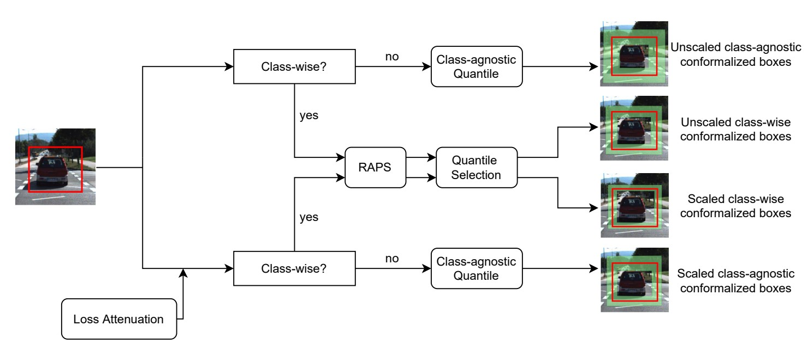
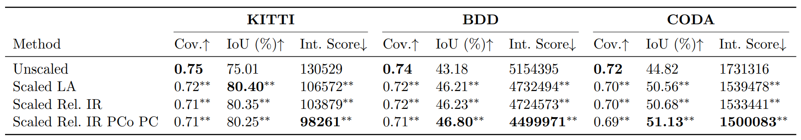

- Methods for Big Data
Probabilistic Object Detection with Conformal Prediction
By Christopher Ries, Moussa Kassem Sbeyti, Nicolas Bianco, and Nadja Klein, posted on August 20, 2026This blog post is about our paper Probabilistic Object Detection with Conformal Prediction accepted for publication in Proceedings of Machine Learning Research (PMLR), Volume 329 as part of the 15th Symposium on Conformal and Probabilistic Prediction with Applications (COPA 2026), which can be found here. This paper evaluates the performance of Conformal Prediction (CP) – a sampling-free, post-hoc, model-agnostic, and distribution-free uncertainty quantification method - when combined with Loss Attenuation for autonomous driving. This approach allows for sampling-free and per-prediction dependent conformalized bounding boxes. Compared to vanilla CP, our approach results in smaller and more accurate bounding boxes.

What is the paper about?
This paper compares scaled and unscaled CP for multi-class object detection. The evaluation is not only based on the coverage, but also on interval sharpness metrics such as the Interval Score and Intersection over Union. Moreover, we also compare class-agnostic and class-wise CP for both, scaled and unscaled CP. Lastly, we use a two-step pipeline that jointly conformalize the classification and regression heads.Motivation
Using object detectors in safety-critical applications such as autonomous driving requires not only accurate predictions but also reliable associated uncertainty estimates. However, most of the state-of-the-art object detectors do not incorporate uncertainty estimates directly into them. Or contrastively, if they do, the uncertainty estimates are model-specific or computational expensive. CP addresses these limitations.Theory
Our work is based on the following equation called marginal coverage for conformal prediction \( \mathbb{P}\left(Y_{n+1} \in \mathcal{C}(X_{n+1})\right) \geq 1-\alpha \) where \( \alpha \) is a predefined (and fixed) miscoverage level and \( Y_{n+1} \) is the ground truth, while \( \alpha \) s the conformalized prediction set/interval, that will contain the ground truth with probability \( 1 - \alpha \) [1]. While unscaled (vanilla) CP will result in fixed width intervals, scaled CP results in adaptive prediction intervals, which can be e.g. based on another sampling free uncertainty estimate. Using CP for both, classification and regression we apply RAPS [2] for using CP in the classification setting. Our two-step approach is similar to the one used in [3], however we extend it by systematically comparing scaled and unscaled CP.Experiments
The experiments are conducted across three autonomous driving datasets (KITTI, BDD, CODA), including a cross-domain setting under distribution shift. Scaled CP consistently improves interval sharpness over unscaled CP, achieving up to 19% higher intersection over union (IoU) and 39% lower interval scores (Int. Score), without sacrificing coverage (cov). Moreover, for scaled CP, three uncertainty estimates derived from loss attenuation are evaluated: the raw uncalibrated output (LA), and two calibrated variants based on relative isotonic regression applied globally (Rel. isotonic regression (IR)) or per-coordinate and per-class (Rel. IR per-coordinate (PCo) per-class (PC)).
Final Thoughts
We systematically compare unscaled and scaled CP for multi-class object detection on three autonomous driving datasets, including an in-domain and a cross-domain evaluation under distribution shift. Scaled CP, where prediction intervals are adapted using aleatoric uncertainty estimates derived from loss attenuation, consistently produces sharper and better- aligned conformalized bounding boxes than unscaled CP, as measured by the IoU and interval score. Crucially, this improvement in sharpness does not negatively affect coverage guarantee. Both variants maintain valid marginal coverage, with unscaled CP tending to over-cover beyond the nominal level.References
[1] Vovk, V., Gammerman, A., and Shafer, G. (2005). Algorithmic learning in a random world. Springer US. [2] Angelopoulos, A., Bates, S., Malik, J., and Jordan, M. I. (2021). Uncertainty sets for image classifiers using conformal prediction. International Conference on Learning Representations. [3] Timans, A., Straehle, C. N., Sakmann, K., and Nalisnick, E. (2024). Adaptive bounding box uncertainties via two-step conformal prediction. European Conference on Computer Vision, 363-398.For questions, comments or other matters related to this blog post, please contact us via kleinlab@scc.kit.edu.
If you find our work useful, please cite our paper:
@article{RieSbeBiaKle2026,
title={Probabilistic Object Detection with Conformal Prediction},
author={Christopher Ries and Moussa Kassem Sbeyti and Nicolas Bianco and Nadja Klein},
year={2026},
note={arXiv:2605.07549}
}